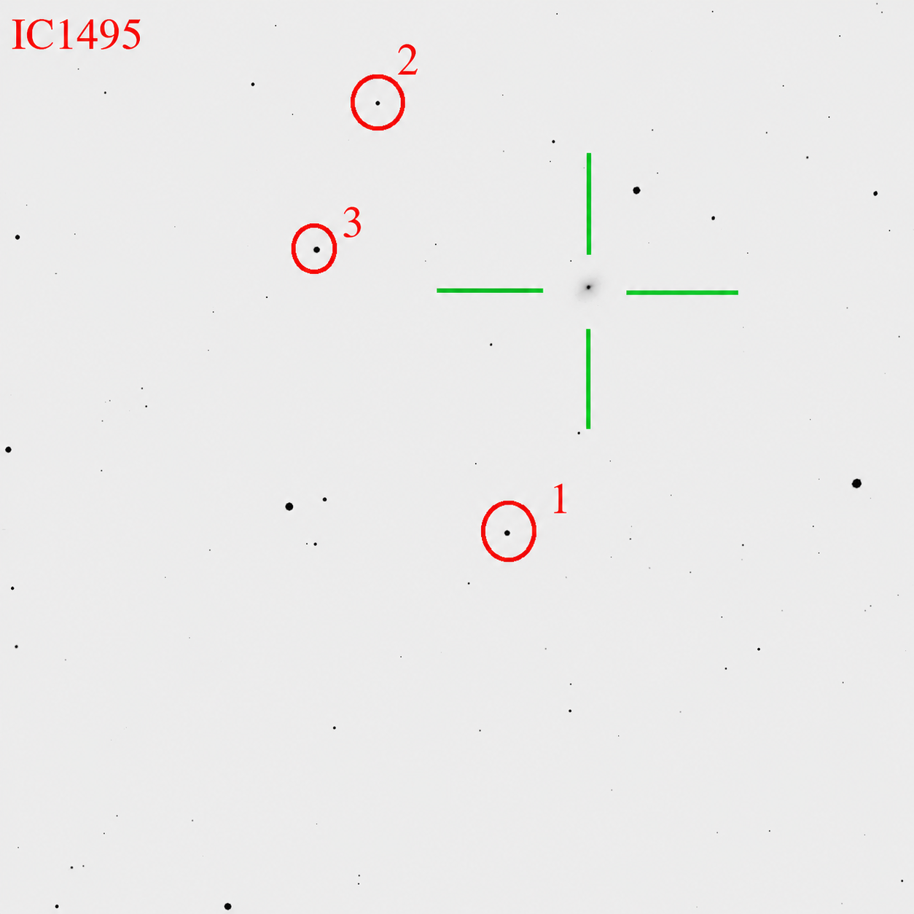

IC 1495
IC 5327 · MCG−02−59−024 · PGC 71631 · 2MIG 3166
Interactive DSS2 view. The AGN is labelled “AGN”; comparison stars are labelled 1, 2 and 3 to match the table and the static IAC80 finding chart below.
IC 1495 was monitored on two consecutive nights in 2025 October: 26 exposures of 250 s in Johnson/Bessell R on October 13 and 35 exposures of 300 s in Johnson/Bessell V on October 14.
Reference-star photometry.
The three numbered comparison stars are matched to APASS DR9. The V magnitudes are used directly from APASS. The R magnitudes are estimates transformed from APASS Sloan r′ and i′ using the Lupton relation.
Transformation check.
V transformed independently from APASS g′ and r′ differs from the direct APASS V value by only 0.029, 0.028 and 0.038 mag for stars 1–3, respectively.
Uncertainty convention.
APASS catalogue entries reported with zero formal uncertainty are retained as raw zeros in the machine-readable data and displayed here as unavailable uncertainties.
Static finding chart

Comparison-star sequence — APASS DR9 + Lupton transformations
| ID | RA (deg) | Dec (deg) | V ± σV APASS · Vega |
B−V ± σ APASS |
g′ ± σg′ APASS · AB |
r′ ± σr′ APASS · AB |
i′ ± σi′ APASS · AB |
VLupton ± σ g′−r′ |
Rest ± σ Lupton r′−i′ |
|---|---|---|---|---|---|---|---|---|---|
| 1 | 352.644555 | −13.503099 | 14.544 ± 0.037 | 1.061 ± 0.110 | 15.081 ± 0.051 | 14.210 ± 0.043 | 13.965 ± 0.082 | 14.573 ± 0.033 | 13.994 ± 0.039 |
| 2 | 352.739712 | −13.531192 | 15.816 ± — | 0.921 ± — | 16.266 ± 0.068 | 15.543 ± 0.034 | 15.459 ± — | 15.844 ± 0.035 | 15.374 ± 0.025 |
| 3 | 352.707451 | −13.544119 | 13.876 ± 0.016 | 0.815 ± 0.092 | 14.247 ± 0.067 | 13.677 ± 0.014 | 13.528 ± 0.066 | 13.914 ± 0.030 | 13.489 ± 0.023 |
Observing log
| Date | Band | Exposure | Acquired | Fiducial 5-px IDV set |
|---|---|---|---|---|
| 2025-10-13 | R | 250 s | 26 | 24 |
| 2025-10-14 | V | 300 s | 35 | 33 |
Source:
Izviekova et al. (2026, manuscript) — IC 1495 multiwavelength analysis
Public article link will be added after release.
Public article link will be added after release.